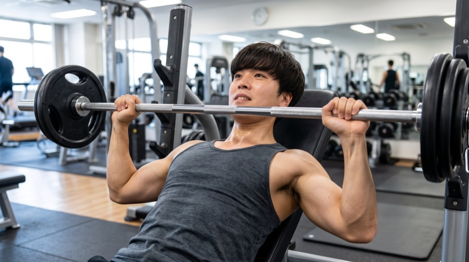

03 / 04
僕には、
3つの必殺技がある。
＊ AKIRA の とくぎを しらべた！
-
とくぎ その1
まず、やってみる行動力
新しいことを見つけると、とりあえずやってみたくなるタイプです。 失敗することもありますが、「やってみないと分からない」という考え方を大切にしています。
-
とくぎ その2

結果で語れる営業力
Web広告代理店とWebメディア事業会社で営業を経験。 体育会系の環境で鍛えられたメンタルを武器に、年間1億円プレーヤーとして自分と会社の成長のために奮闘しています。
-
とくぎ その3
営業 × Webマーケの二刀流
営業だけでなく、ディレクション・SEO・広告運用も学んできました。 売る力とWebの知識の両方を持っていることが強みです。